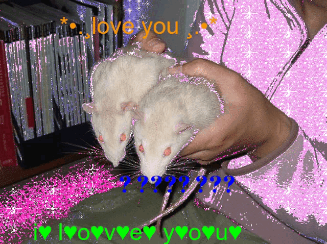
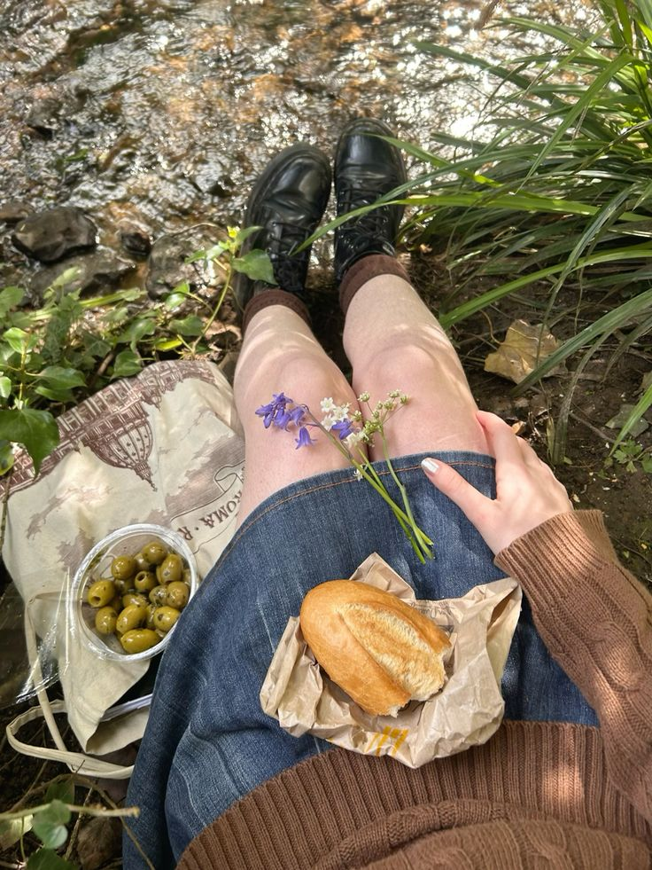
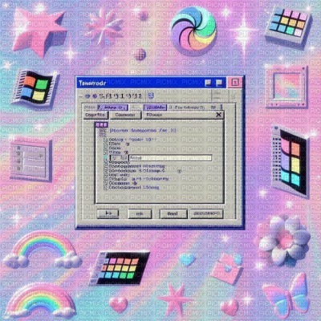

Weirdcore
Weirdcore é uma aesthetic que representa o estranho, o familiar distorcido, e muitas vezes o sonho virando pesadelo. É aquela sensação de “já vi isso antes, mas não lembro onde” — meio nostálgico, meio assustador. A vibe geral é liminar, ou seja, algo entre dois estados: não é real, mas também não é completamente fictício. Essa estética tenta capturar o que você veria em sonhos confusos, memórias borradas, ou lugares vazios que parecem existir fora do tempo.
Características do Weirdcore:
- Imagens borradas ou de baixa qualidade, como fotos antigas de celular ou câmeras de segurança.
- Locais vazios e silenciosos, tipo corredores de escolas, parques desertos, ruas sem ninguém, quartos mal iluminados.
- Texto solto, muitas vezes em fontes simples, como Comic Sans ou Arial, geralmente com mensagens vagas ou existenciais ("Do you remember?", "This is not real", "Go back").
- Efeitos glitch, distorções de imagem e ruídos visuais.
- Cores lavadas ou sombrias, muitas vezes com filtros frios ou distorcidos.
Y2K
Y2K é uma aesthetic inspirada no final dos anos 90 e começo dos anos 2000 (aproximadamente entre 1997 e 2004), quando o mundo estava obcecado com o futuro, tecnologia, internet e o novo milênio. O nome vem do “Bug do Milênio” (Year 2000 Problem), um medo real de que os computadores fossem colapsar quando o calendário virasse de 1999 pra 2000. A estética mistura otimismo high-tech, moda ousada, futurismo retrô e aquela energia de início da era digital — como se vivêssemos dentro de um CD brilhante ou de um jogo do PS1.
Características do Y2K:
- Vinil, couro sintético, brilho, lantejoulas
- Efeitos 3D e reflexivos
- Formas redondas e futuristas (tanto em design gráfico quanto em objetos)
- Telefones flip e computadores grossos
- Sites antigos, como o layout do MSN ou MySpace
- CD-ROMs, logos pixelados, glitter digital
- Tipografias futuristas e arredondadas
Frutiger Aero

Frutiger Aero é uma aesthetic que captura a visualidade do mundo digital, publicitário e tecnológico entre 2004 e 2013. É aquela sensação de estar olhando pra um papel de parede do Windows Vista, um comercial da Samsung, ou um menu de celular da Sony Ericsson — tudo com brilhos, reflexos e fluidez digital perfeita. O nome vem da fonte Frutiger (usada em muitos sistemas e marcas da época) + o estilo "aero", que era o nome da interface gráfica da Microsoft durante o Windows Vista/7 (transparente, brilhante, fluida).
Características do Frutiger Aero:
- Céus azuis com nuvens brancas perfeitas
- Gotas d'água, folhas verdes, bolhas flutuando
- Reflexos, gradientes, superfícies gelatinosas
- Brilhos suaves, efeitos 3D redondos
- Ar digital e etéreo — tudo parece limpo, leve, idealizado
Cottagecore
Cottagecore é uma aesthetic que idealiza a vida simples no campo, com um foco romântico e nostálgico em coisas como natureza, tranquilidade, rotina doméstica e conexão com o tempo. É tipo viver num universo onde não existe pressa, internet ou barulho de cidade — só o som dos passarinhos e o cheiro de chá com lavanda. É como se você tivesse se teletransportado pra um conto de fadas rústico, onde tudo é calmo, bucólico e bonito de um jeito orgânico.
Características do Cottagecore:
- Campos floridos, florestas, hortas e jardins
- Casas antigas ou chalés com madeira, tijolo, cortinas rendadas
- Luz natural suave, clima nublado ou ensolarado de fim de tarde
- Cestos de vime, livros antigos, louças floridas
- Comidas caseiras: tortas, pão, chá, frutas colhidas na hora
Liminal Space

Liminal Space (ou “espaço liminar”) é uma aesthetic que gira em torno de lugares de transição — espaços que você passa por, mas normalmente não permanece neles. Tipo corredores, escadas, saguões de hotel, estacionamentos vazios, parquinhos à noite, shoppings fechados, etc. São locais entre o ponto A e o ponto B, e por isso causam uma sensação esquisita, quase fora da realidade. A palavra “liminal” vem do latim limen, que significa “limiar”, ou seja: entre um estado e outro. E essa é a vibe: você está no meio de algo, mas não sabe exatamente o quê.
Características do Liminal Space:
- Espaços vazios e silenciosos, geralmente bem iluminados mas sem vida
- Arquitetura comum, mas estranhamente fora de contexto (como um parquinho dentro de um estacionamento)
- Fotos granuladas, tortas ou sem foco perfeito
- Cores desbotadas ou artificiais, tipo tapetes laranja, paredes bege, luz verde de emergência
- Nenhuma pessoa visível, nem sombra
Vaporwave

Vaporwave é uma aesthetic (e um gênero musical) que começou por volta de 2010 como uma crítica estética e sonora à cultura de consumo, ao capitalismo e à nostalgia vazia — mas acabou virando ela mesma um estilo de nostalgia hiperestilizada. É tipo um sonho digital decadente, feito de fragmentos dos anos 80 e 90: propagandas antigas, música de elevador, gráficos 3D ruins, lojas de eletrônicos, VHS, e o visual das primeiras interfaces de computador. Pensa numa loja da Blockbuster flutuando num céu cor-de-rosa, com uma estátua grega no meio e uma música que parece ter sido retirada de uma fita cassete esquecida em 1996. É isso.
Características do Vaporwave:
- Estátuas gregas (tipo bustos clássicos)
- Sol poente com linhas horizontais (estilo synthwave)
- Palmtrees, janelas do Windows 95, fontes japonesas
- Telas de erro de sistema, gráficos 3D ultrapassados, mosaicos de pixel art
- Elementos lo-fi e retro-futuristas lado a lado
Webcore
Webcore é uma aesthetic que celebra — e às vezes ironiza — o visual da internet dos anos 90 e 2000, especialmente os primórdios da web 1.0: sites pessoais, fóruns, páginas de fãs, layouts bagunçados, gifs animados, cursores customizados e um monte de sparkles dançando pela tela. É tipo entrar num site feito no Geocities por alguém de 14 anos apaixonado por Sailor Moon e Linkin Park, com música de fundo MIDI e mil “em construção” piscando. Totalmente sobre a vibe crua, criativa, sem filtro e espontânea da internet raiz.
Características do Webcore:
- Cores saturadas e contrastes exagerados
- Gifs animados (corações girando, glitter, fogo, caveiras, estrelinhas)
- Layouts sobrecarregados, com texto piscando, botões gigantes, cursores personalizados
- Barras de navegação toscas, fontes Comic Sans ou Papyrus
- “Under construction” signs, contadores de visitas, plug-ins visuais absurdos
- Colagens digitais, imagens cortadas com fundo transparente quebrado
- Temas pessoais tipo: “minha fanpage”, “meu diário virtual”, “meus gifs favoritos”
- É feio, mas é deliciosamente feio. Como um caderno de recortes virtual hiperativo.